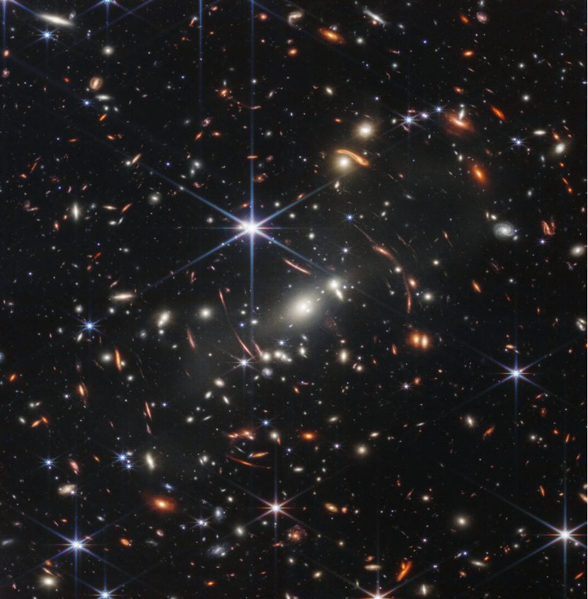
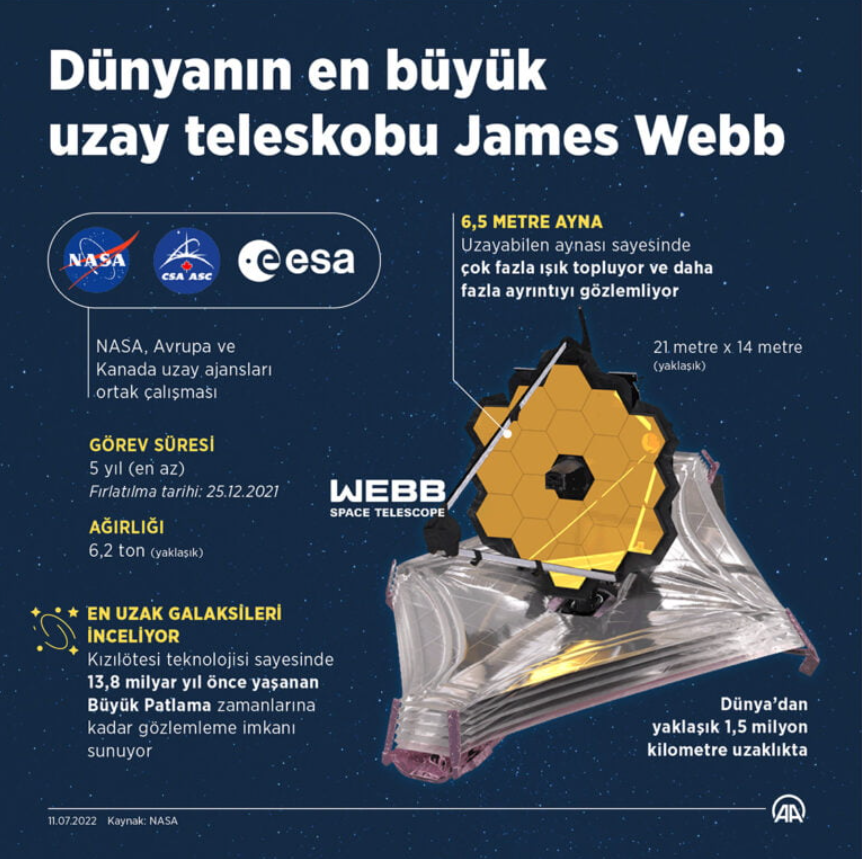

Amerikan Havacılık ve Uzay İdaresi (NASA) yeni nesil James Webb Uzay Teleskobu’nun gönderdiği ilk tam renkli fotoğrafı kamuoyuyla paylaştı.
İlk kez paylaşılan fotoğraf Hubble uzay teleskobunun yerini alarak evrenin sırlarını açığa çıkarmaya yardımcı olacak James Webb teleskobunun altı ay boyunca uzayın derinliklerinde yaptığı gözlemlerden oluşuyor.
İlk kozmik görüntüler şimdiye dek görülmemiş uzak galaksileri, parlak bulutsu yıldız kümeleri yani nebulaları ve uzak dev gaz gezegenleri içeriyor.
NASA’nın paylaştığı fotoğrafta James Webb teleskobu, SMACS 0723 olarak adlandırılan ön plandaki bir galaksi kümesini kozmik bir büyüteç gibi kullanarak arkasındaki çok uzak ve soluk galaksileri görüntüledi.N
NASA, salı günü üç fotoğraf daha paylaşacak. Paylaşılacak fotoğraflar arasında yer alacak Carina Nebulası “Gizemli Dağ” olarak bilinen yüksek sütunlara benzer görüntüsüyle tanınıyor. Üç ışık yılı yüksekliğindeki kozmik tepenin eşsiz fotoğrafı Hubble teleskobu tarafından çekilmişti. Orijinali siyah-beyaz olan bu fotoğraflar sonradan renklendirilmişti.
James Webb gezegenlerde yaşamı araştıracak
NASA Direktörü Bill Nelson ise fotoğrafın paylaşılmasının ardından yaptığı konuşmada, “Biliyorsunuz bundan 100 yıl önce tek bir galaksi olduğuna inanıyorduk, şimdi sayısız milyarlarca galaksi ve güneş olduğunu biliyoruz.” ifadesini kullandı.
James Webb uzay teleskobu;Kızılötesi teknolojisi sayesinde 13,8 milyar yıl önce yaşanan Büyük Patlama zamanlarına kadar gözlemleme imkanı sunuyorKAYNAKLAR: Uzay.org · Images by Anadolu Ajansı